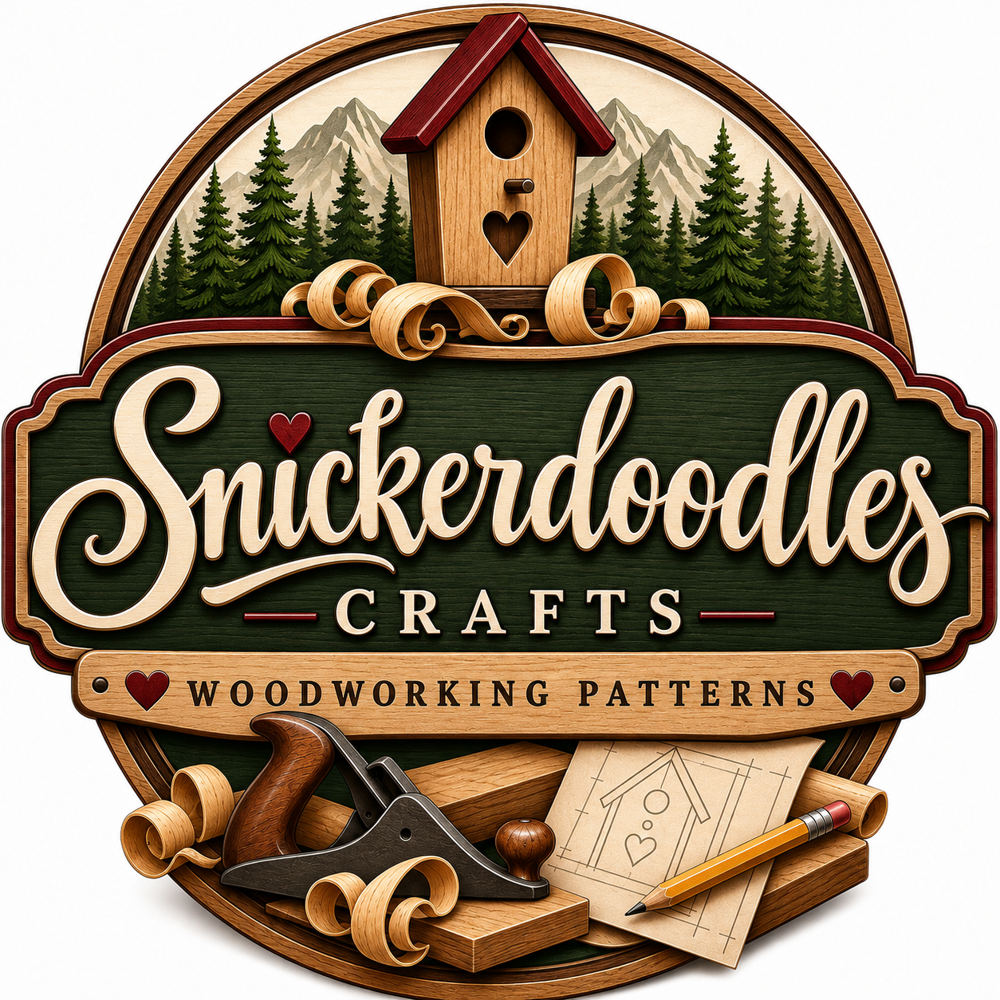

Creative beginnings
A sketch, a shape, or a detail from nature can be the beginning of a woodworking project.
Welcome to Snickerdoodles Crafts
Wood design and woodworking patterns that celebrate the warmth of wood and the simple joy of making something with your own hands.
Get to know SnickerdoodlesFor the love of wood, creativity, and craft.

About Snickerdoodles
Snickerdoodles Crafts brings together wood design, woodworking patterns, and a love of creative projects. It starts with an idea and the possibilities in a piece of wood.
The birdhouse, evergreens, tools, and drawn plans in our logo reflect that spirit: a connection to nature, an appreciation for traditional craft, and the pleasure of turning inspiration into something tangible.
A sketch, a shape, or a detail from nature can be the beginning of a woodworking project.
Grain, texture, and natural character give wood its enduring appeal and each creation its personality.
Working with your hands connects the idea on the page to the satisfaction of a finished piece.
Woodworking patterns
Patterns connect creative ideas with the making process. At the heart of Snickerdoodles Crafts is an appreciation for wood design and the possibilities a pattern can open up.